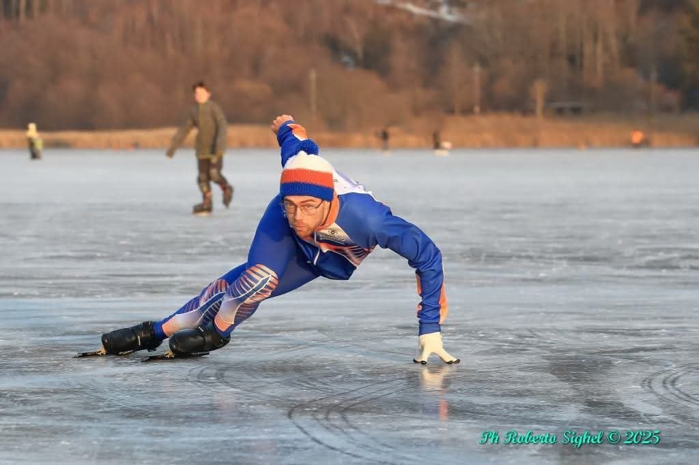

Pattinaggio su ghiaccio
Ho iniziato a pattinare a quattro anni, gareggiando sia nello short track sia nella pista lunga. Da junior ho raggiunto più volte il podio nella mia categoria ai Campionati Italiani.

06 / 06
Al di fuori del software, mi dedico allo sport, agli scacchi e seguo gli sviluppi dell'esplorazione spaziale.
Ho iniziato a pattinare a quattro anni, gareggiando sia nello short track sia nella pista lunga. Da junior ho raggiunto più volte il podio nella mia categoria ai Campionati Italiani.

Da quando mi sono trasferito in Danimarca, ho iniziato a praticare bouldering al posto dello short track. Mi piace soprattutto arrampicare con gli amici.
Ho giocato a scacchi per diversi anni e partecipato a tornei, tra cui due edizioni del Trofeo CONI con la squadra del Trentino. Oggi continuo a giocare online nel tempo libero.
Mi affascinano i sistemi di propulsione, la meccanica orbitale e la progettazione dei veicoli spaziali. Mi piace approfondire il funzionamento dei razzi e seguire gli sviluppi dell'esplorazione spaziale.